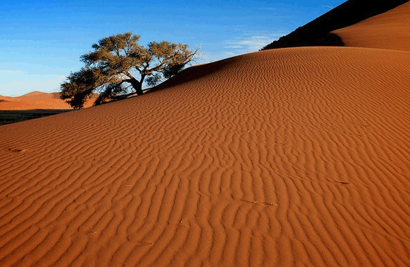

热门目的地
周边

- 周边游
- 野三坡
- 房山
- 白洋淀
- 北戴河
国内
- 江西
- 婺源
- 庐山
- 海南
- 三亚
- 海口
- 蜈支洲岛
- 云南
- 丽江
- 昆明
- 香格里拉
- 西双版纳
- 华东
- 乌镇
- 千岛湖
- 扬州
- 苏杭
- 黄山
- 四川
- 九寨沟
- 成都
- 峨眉山
- 乐山
- 西藏
- 拉萨
- 东北
- 大连
- 长白山
- 哈尔滨
- 阿尔山
- 广西
- 桂林
- 德天
- 北海
- 古东
- 福建
- 厦门
- 武夷山
- 新疆
- 乌鲁木齐
- 青海
- 敦煌
- 其他
- 青岛
- 张家界
- 三峡
出境
- 江西
- 婺源
- 庐山
- 海南
- 三亚
- 海口
- 蜈支洲岛
- 云南
- 丽江
- 昆明
- 香格里拉
- 西双版纳
- 华东
- 乌镇
- 千岛湖
- 扬州
- 苏杭
- 黄山
- 四川
- 九寨沟
- 成都
- 峨眉山
- 乐山
- 西藏
- 拉萨
- 东北
- 大连
- 长白山
- 哈尔滨
- 阿尔山
- 广西
- 桂林
- 德天
- 北海
- 古东
- 福建
- 厦门
- 武夷山
- 新疆
- 乌鲁木齐
- 青海
- 敦煌
- 其他
- 青岛
- 张家界
- 三峡

- 首页 >
- 游记 >
- 快乐的旅行——土耳其
快乐的旅行——悠游纳米比亚用心聆听沙海交响曲
非洲西南部的纳米比亚，浩瀚的大西洋亲吻着德意志烙印深重的鲸湾港口，带来如水般的柔情；而海岸线的另侧，世界上最古老的苏丝斯黎红沙漠铺展开来，风沙卷起一股猩红色的沧桑。海水与沙漠就这样缠绵在一起，谱写出一首华丽的沙海交响曲。

大自然的慷慨给予，使得纳米比亚拥有了独具魅力的原始狂野和神秘气质，赴一场大漠中的奢华之旅让人心驰神往。夕阳下，在Namib-Naukluft 国家公园，登上地球上最古老的沙丘，看着光线雕刻出各种迷人的造型，尤其是“45号沙丘”那美妙的S线形，光和影相辉相映，一半黑一半红，黑得沉静，红得妩媚。
经过上亿年大自然的变迁，干燥的热风将岸上山中的岩石风化为细沙和粉尘，让整个纳米布变成了一片沙海。而苏丝斯黎所在的Namib-Naukluft 国家公园则集中了纳米布沙漠的所有精华。不妨在公园门口换乘沙漠专用的四驱车，向最壮观的“45号沙丘”驶去，那里因为距离公园大门45公里而得名。
苍茫大地的宽广厚实赋予了人们对纳米比亚的遐想和期许，毗邻的大西洋又赐予了这里一种截然不同的美。纳米比亚的海滨城市斯瓦科普蒙德(Swakopmund)，有着浓厚的德国殖民地风情。距离斯瓦科普蒙德 35公里便是著名的港口鲸湾 (Walvis Bay)，以“世界第二好的水域港湾”闻名于世，也是旅游观光客留恋最多的地方。
贵族运动。在这个非洲大陆唯一一个前德国殖民地，除了那些德式建筑和生活方式外，还带来了德国人一向钟爱的狩猎传统，至今来纳米比亚狩猎的游客中八成是德国和奥地利人，在德国就有将近100家狩猎代理机构。纳米比亚是非洲少数几个允许狩猎旅行的国家之一，这里拥有世界上最大的狩猎场，面积达228万公顷。经过上亿年大自然的变迁，干燥的热风将岸上山中的岩石风化为细沙和粉尘，让整个纳米布变成了一片沙海。而苏丝斯黎所在的Namib-Naukluft 国家公园则集中了纳米布沙漠的所有精华。不妨在公园门口换乘沙漠专用的四驱车，向最壮观的“45号沙丘”驶去，那里因为距离公园大门45公里而得名
港口鲸湾 (Walvis Bay)，以“世界第二好的水域港湾”闻名于世，也是旅游观光客留恋最多的地方。苍茫大地的宽广厚实赋予了人们对纳米比亚的遐想和期许，毗邻的大西洋又赐予了这里一种截然不同的美。
纳米比亚还允许交易海豹皮，在海豹聚居地十字角附近就有专门的工厂店。 当然，对于一般游客，动物标本过于庞大，首都温得和克的手工艺品市场的商品更符合他们的标准，那里汇集了来自纳米比亚各地的手工艺品，从钻石，传统饰物，木雕，人偶，辛巴红泥制品，到野猪牙一应俱全，仿佛多姿多彩的纳米比亚旅游的一个缩影。当然，对于一般游客，动物标本过于庞大，首都温得和克的手工艺品市场的商品更符合他们的标准，那里汇集了来自纳米比亚各地的手工艺品，从钻石，传统饰物，木雕，人偶，辛巴红泥制品，到野猪牙一应俱全，仿佛多姿多彩的纳米比亚旅游的一个缩影。
上一篇：野生动物的澳大利亚探险
下一条：非洲部落探险之旅——游记人生